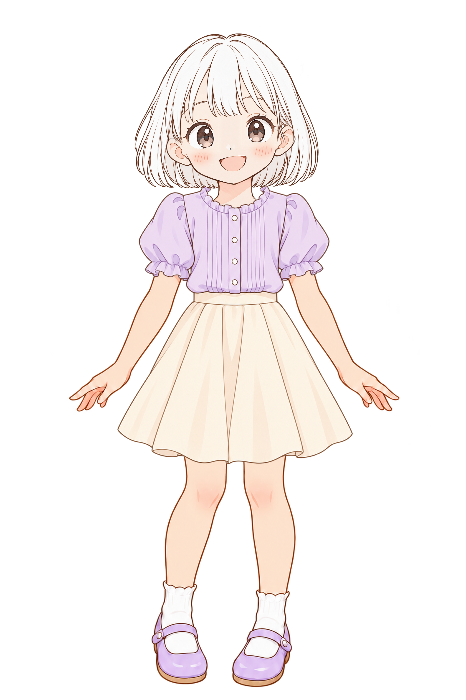
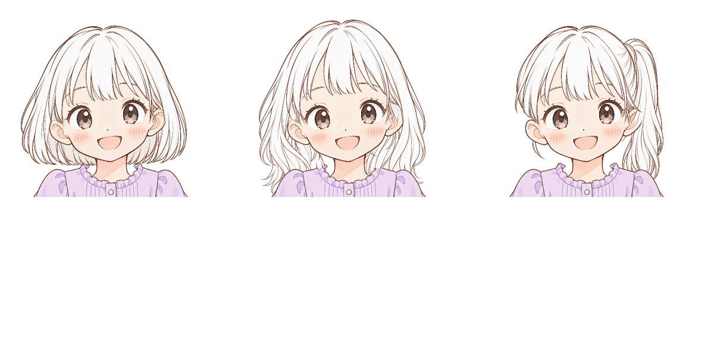
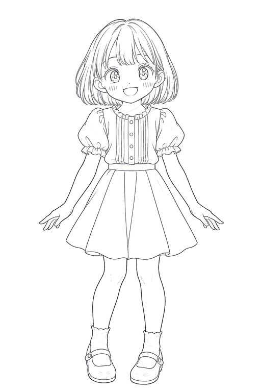
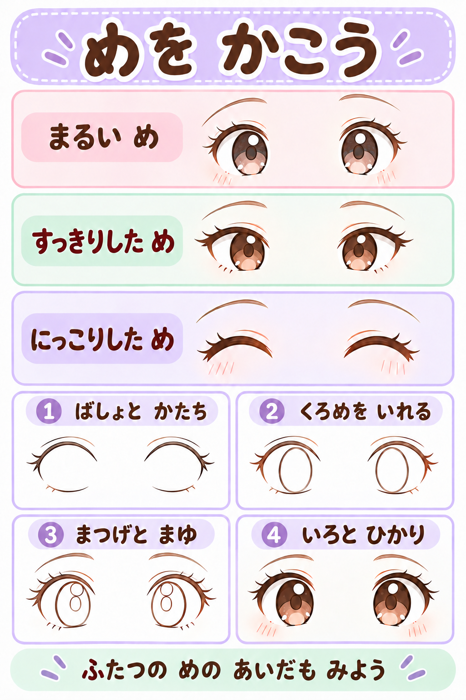
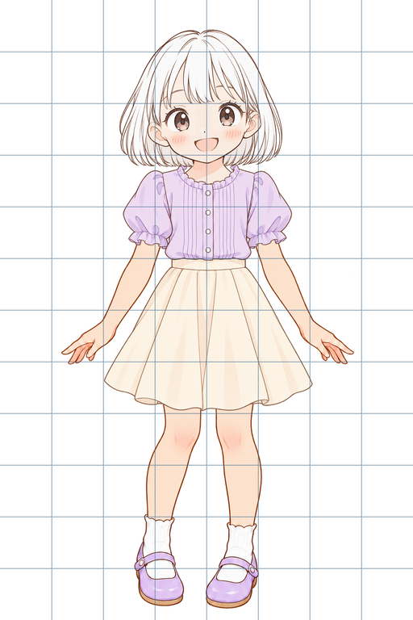
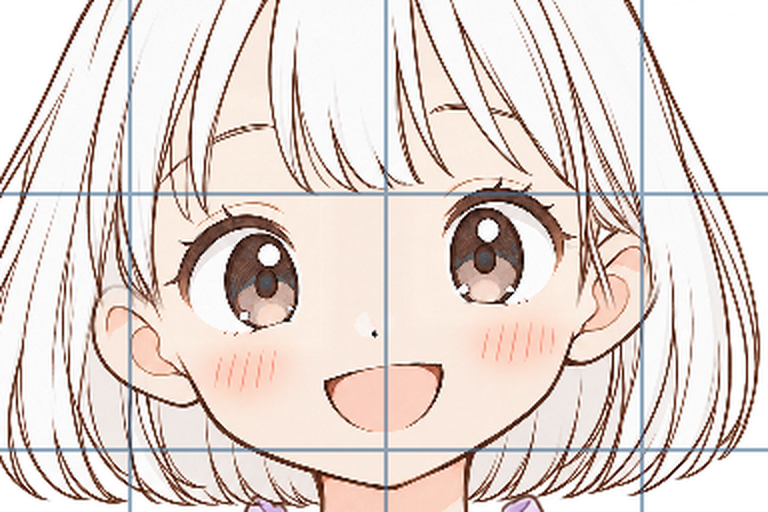
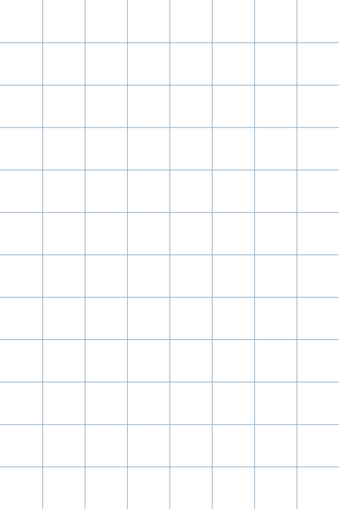
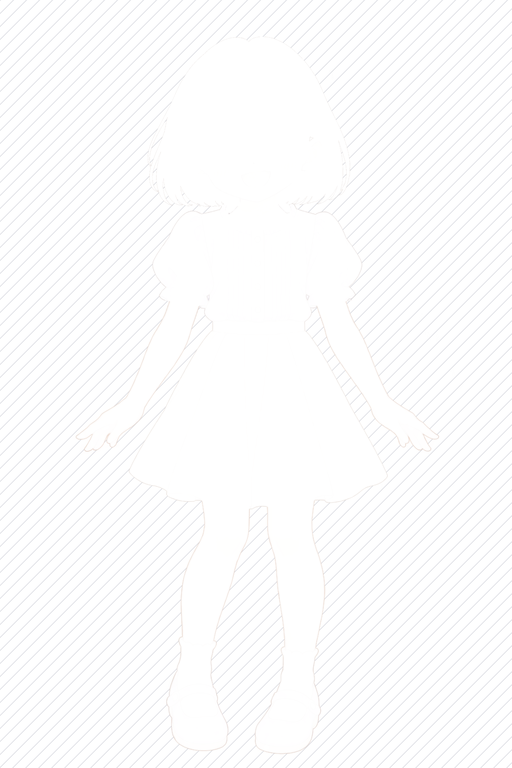
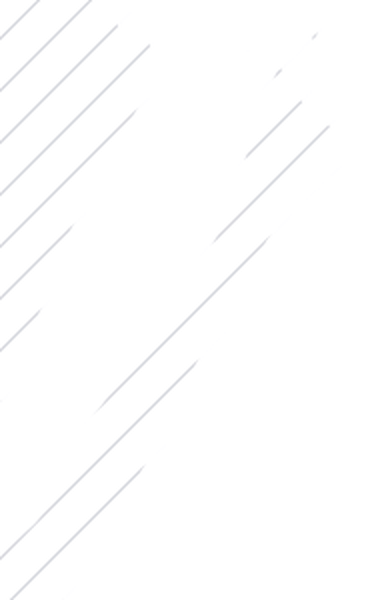
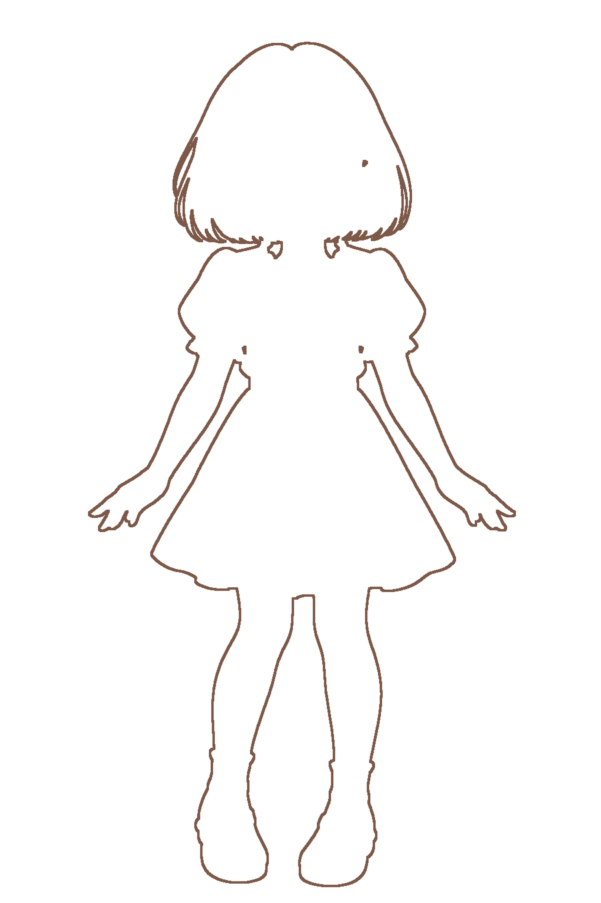

キャラクター・デザイン工房
そざい v17・こうかいぞうど ／ かく・ぬる ／ すきな かみがたと ふくで、キャラクターを きせかえよう。
こうかいぞうどばん：2048 × 3072 ピクセル。PSDを あたらしく ほぞんして ひらこう。
PSDを ひらくと こうなるよ
えらんだ こを、この すがたで PSDに ほぞんできるよ。

めや かみの みほんは、PSDの なかで オンにして たしかめられるよ。
おてほん

目と かみが そろった 完成見本だよ。かきやすさと マスは、みぎで えらべるよ。
今日は どんな子にする？
すきな かみと ふくを えらぼう。PSDに かきたしても いいよ。
目と かみが そろった おてほんを PNGで ほぞんするよ。マスも えらんだ とおりに つくよ。
お手本もほぞんめの カードを ひらく
きせかえで キャラクターを作ろう
- 「キャラクターを作る」を えらんで、すきな かみがたと服を くみあわせよう。
- おきにいりの キャラクターが できたら、「この子の絵をかく（ほぞん）」を おそう。
- ほぞんした PSDを アイビスペイントで ひらいて、「ここに・かきたす」に すきな絵を かいてみよう。
目や かみを じぶんで かきたいときは、「今日は なにをする？」で れんしゅうしたい ものを えらぼう。
かみがたのれんしゅう

① かくところを えらぶ
「かみがたのれんしゅう」で、まえがみだけか、かみ ぜんぶかを えらぼう。すきな ふくも えらべるよ。
② おてほんを みる
おてほんPNGを「しゃしん」に ほぞんして、さんしょうウインドウに いれよう。
③ かみを かく
PSDを ひらいて「ここに・まえの・かみを・かく」を えらぼう。うしろの かみは「ここに・うしろの・かみを・かく」に かくよ。
④ しあげる
あたまの かたちより、すこし そとに かみを かこう。みほんレイヤーで くらべたら、オフに もどそう。さいごに マスも けそう。
まえがみだけなら、うしろがみは はじめから ついているよ。かみ ぜんぶなら、じぶんの すきな かみがたにも できるよ。
ぬり絵をしよう
せんがの したに、すきな いろを ぬろう。おてほんと ちがう いろでも いいよ。
① すきな こを えらぶ

「ぬり絵をする」を えらんで、かみと ふくを きめよう。
② PSDを ひらく
うえの「この子の絵をかく（ほぞん）」を ファイルに ほぞんして、アイビスペイントで ひらこう。
③ いろを ぬる
「ここに・いろを・ぬる」を えらぼう。せんがの したに、ブラシで いろを ぬろう。
④ しあげる
マスを オフにして、しあがりを みよう。かきたしたいときは「ここに・かきたす」を つかおう。
せんがは すこし すきまが あるよ。はじめは ブラシで ぬってみよう。せんがPNGも、うえで「線画（せんが）」を えらんで ほぞんできるよ。
目のれんしゅう・はじめかた
- うえで「目のれんしゅう」と、すきな かみ・ふくを えらぶ。「この子の絵をかく（ほぞん）」を「ファイル」に ほぞんして、アイビスペイントで ひらく。
- えらんだ かみと ふくは、はじめから ついているよ。めは まだ かかれていないので、じぶんで かいてみよう。
- 「assets/eye_card.png」を ひらき、写真に ほぞんする。
- さんしょうウィンドウの「資料を追加」で、写真から めの カードを えらぶ。
- いちばん うえの「ここに・めを・かく」を えらんで、かいてみよう。
「めの・みほん・ふつう」は はじめは オフ。ちょっと みたいときだけ オンにして、かくときは オフに もどそう。
ぜんぶ見てかくときは「ぜんぶ見てかく用のPSD」と、うえで えらんだ おてほんPNGを つかおう。おてほんPNGは 写真に ほぞんするよ。
めの みほんと ４つの ステップ

ふたつの めの あいだの はばも みよう。はじめは、ひかりの まるを ひとつ いれるだけでも いいよ。
マスを つかって かこう
① マスを そろえる

おてほんも かくところも、よこ８・たて12。ひとマスは しかくだよ。
② ひとマスを みる

せんは マスの どこを とおるかな？ はしからの きょりも みよう。
③ すこしずつ かく

ぜんぶ見てかくなら、おおきな かたちから。めだけなら、ばしょから。
④ マスを けす
ぜんたいを みて、ばしょや おおきさを くらべよう。
すきまの かたちを みよう
① しろぬきで みる

しゃせんは、えの そとの すきまだよ。
② ひとつ えらぶ

うでと からだの あいだは、どんな かたち？
③ ふちを かく

しろい かたちと しゃせんの さかいを みて、せんを ひこう。
④ もとに もどす
おおきな かたちの あとに、めや ふくを かきたそう。
マスと しろぬきは、いっしょに つかえるよ。すきまの かたちが どの マスに はいるか みよう。
先生むけの メモ
はじめの そざいセットです。キャンバスは2048×3072、たてよこは2:3。グリッドは8×12、ひとマス256ピクセルの しかくです。
「キャラクターを作る」は９くみのPSDです。め・えらんだ かみ・ふくが そろっています。見かたと マスの えらびかたに あわせて、はじめの ひょうじが かわります。いちばん うえに かきたしレイヤーがあります。
目のれんしゅうには、かきこみ・線画・ガイド・パーツのレイヤーがあります。かくところ、ガイド、まえがみ、めのみほん、ふく、かお、てあし、うしろがみ、はいけいの じゅんです。ぜんぶ見てかく用のPSDには、しろいページ・かくところ・マス・しろぬき・しゃせんが入ります。PSDの かきこみじゅんは、がっこうで ためしたv3と おなじです。こんかいの あたらしい そざいは、まだiPadで ためしていません。かおは はじめの モックアップから がぞうへんしゅうで とりだしたものです。もとの がぞうと ピクセルまで おなじでは ありません。
①は９くみのPSDがあります。えらんだ かみ・ふくが はじめから オンで、めの みほんは オフです。しろぬき・しゃせんも それぞれの くみあわせに あっています。べつの かみ・ふくの レイヤーも のこしていますが、PSDの なかで きせかえた ときは、ガイドは もとの くみあわせの ままです。９とおり×３つの みかた×マスの あり・なしで、54まいを いれています。ぬりえは９くみのPSDと、マスの あり・なしの せんがPNG18まいを くわえています。ぬりえPSDには、かきたし・せんが・マス・いろをぬる・はいけいに加え、切り替え用のガイドが入ります。
かくところは ガイドより うえなので、しろぬきを オンにしても かいたものは のこります。かきだすまえに グリッド・しゃせん・しろぬきを オフに してください。めの れんしゅうでは、じぶんで かいた めを みせるために、めのみほんも オフに してください。
これは ローカルで つかう、きせかえと おえかきそざいの ページです。えらんだ こを PSDで ほぞんし、アイビスペイントで かきます。
すきな いろや かたちに かえても いいよ。じぶんだけの こに してみよう。